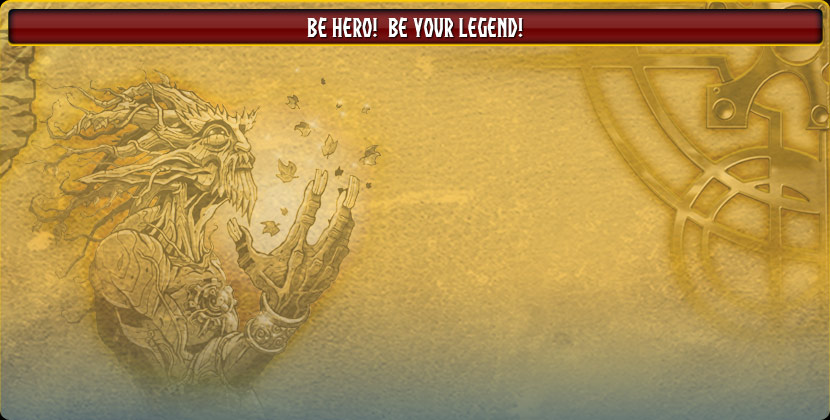

The BeHero is a toy by Giochi Preziosi released in 2010. It consisted of a handheld RPG game with scanning codes from the card game.
Ciao Eroe, il mio nome è Sephaestion e servo da tempi immemorabili il mio Maestro, il Guardiano del Tempo. Il suo nome è così antico da non poter nemmeno essere pronunciato, per quanto ne so lui è sempre esistito. Il compito del Guardiano del Tempo è quello di vegliare sulle sei Grandi Epoche, mantenendo il delicato equilibrio tra il bene e il male ed evitando che morte e distruzione regnino incontrastate. Un giorno, il mio Maestro ebbe una visione. Vide un futuro terribile, in cui le forze del male occupavano le sei Epoche e distruggevano tutto ciò che era buono. Guidati dal Signore Oscuro Necare, queste orde di demoni nella visione riuscivano a fermare e dominare il Tempo stesso. Fortunatamente il mio maestro aveva un piano, cioè chiamare un potente eroe proveniente da un mondo parallelo da allenare personalmente per usare il potente Libro del Tempo. Pensa che questo antichissimo manufatto è in grado di farti viaggiare attraverso le Epoche tramite le sue pagine! Dopo aver finito l'allenamento, l'eroe avrebbe dovuto viaggiare indietro nel tempo ed evitare l'arrivo del Signore Oscuro. Ahimè... successe una cosa inaspettata. Il Signore Oscuro ci colse di sorpresa e ci attaccò per primo. Sconfisse il mio maestro e reclamò per sé il Libro del Tempo. Fortunatamente all'ultimo secondo, il mio maestro decise di distruggere il Libro con la sua magia prima che il Signore Oscuro riuscisse a scappare con esso. Il Guardiano strappò tutte le pagine, mise quello che rimaneva nelle mie mani, e mi teletrasportò nel Tempo... e così eccomi qui! Necare ha messo in piedi il suo piano. Ha mandato i suoi demoni Necarii in ogni epoca usando le pagine strappate del Libro del mio maestro. Uno ad uno, ogni regno è stato invaso. Ora tocca a te, Eroe del Tempo: era dopo era devi distruggere i demoni, trovare tutti i pezzi rubati delle mappe, e ricostruire il Libro del Tempo. Solo allora potremo viaggiare fino alla Fine del Tempo e combattere contro Necare... Aiutami!